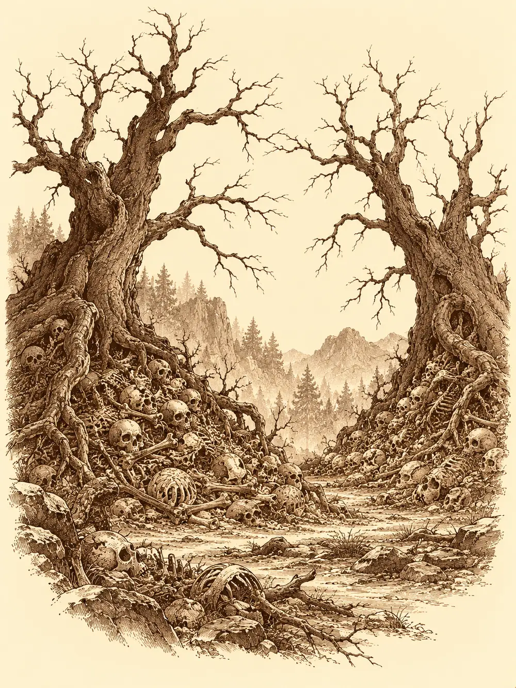

Capítulo 36
En las profundidades del bosque
Libro III · La boda del shogun
Erk subió hasta las copas de un aleteo y se quedó suspendida un momento sobre el follaje, girando la cabeza a un lado y a otro. Bosque. Bosque hacia el norte, bosque hacia el sur, kilómetros de verde apretado en todas direcciones sin un claro, sin un humo, sin un tejado. Bajó a ras de las ramas y volvió a mirar. Nada.
Abajo, sus compañeros discutían.
"Os dije que el bosque me lo conocía yo", protestaba Sun Gukon. "Que fuera yo delante. Pero no, el mono se despista, el mono no sabe".
"¿No decías que tu templo estaba por este camino?".
"Si no me habéis dejado guiaros".
Habían salido de Ukio por un encargo de kappa que alguien había visto por la zona y, en algún momento que nadie supo precisar, se habían desviado. Ahora estaban en una parte del Bosque del Infierno que ninguno reconocía, con la luz filtrándose verdosa entre las hojas y el suelo blando de humus bajo los pies. Shiru y Jin, al margen de la discusión, se intercambiaban pan. Jin llevaba semanas atrapado entre papeles del shogun que Guxi le ponía delante para firmar, y aquella salida, aunque fuera para perderse, le sabía a aire libre. Shiru, por su parte, seguía intentando acercarse a Zia y seguía quedándose a medio camino cada vez que la tenía delante.
Ikari se había mantenido al margen del pueblo desde el encuentro con los enmascarados del culto. El tanuki tenía los ojos pequeños y vivos de los suyos, la barriga redonda y una botella de sake que nunca se vaciaba colgada del cinturón. Aquella mañana les había dado una noticia: antes de que el mercader de la cueva se quedara el mapa de los sectarios, él había tenido tiempo de mirarlo, y había copiado con exactitud, sobre un mapa suyo, la posición de las cuatro cruces.
Sun, por su parte, andaba preguntando a todo el que pasaba por su templo si conocía algún monje capaz de enseñarle a volar sobre las nubes, como el Rey Mono de su libro. Maroxi llevaba noches entrenando con el inugami y estudiaba en sus ratos libres la leyenda de la espada de cristal. Erk, antes de salir, había ido a ver al cachorro. Le había contado a Koi, en la lengua de los animales del bosque, que su madre estaba muy mal pero mejoraba poco a poco, y el pequeño zorro había escuchado con las orejas muy quietas.
Desde lo alto, Erk distinguió por fin un punto donde los árboles clareaban, a unos doscientos pies hacia el norte. Bajó para avisar. Antes de posarse oyó algo más: pisadas lentas, muchas, y un tintineo de metal contra metal, como de armaduras sueltas que chocaran al andar.
"Viene algo", dijo. "Y no me da buena espina".
Salieron de entre los árboles por todas partes. Zombis de carne gris y esqueletos que se movían a tirones, con tierra húmeda todavía pegada a los huesos, como si alguien los hubiera desenterrado hacía muy poco. Llevaban armaduras, pero no se parecían a ninguna de las que habían visto en Kuroto, ni a las de los samuráis del shogun ni a las de los ejércitos de ahora: eran piezas antiguas, de otra época, roídas por los años y la humedad, de cuero algunas, de metal otras.
Shiru fue el primero en llegar. Golpeó a un esqueleto con el borde del escudo y lo desplazó de un empujón hacia donde él quería; luego hizo un amago tan convincente que el muerto se giró y descargó la espada contra el zombi que tenía al lado. El cervan agarró al siguiente y lo sujetó contra el suelo. Jin entró con su espada y el fuego que le salía de las manos. Ikari levantó una de las suyas y una bola de llamas estalló entre cuatro de aquellos cuerpos, que se deshicieron entre huesos y jirones. Maroxi se lanzó bailando entre los enemigos con la espada corta, Erk disparaba desde arriba y una flecha se perdió entre las costillas de un esqueleto arquero que intentaba devolverle el tiro.
Sun apenas pudo dar un golpe.
"¡Dejadme alguno!", gritaba. "¡Que caen todos antes de que llegue!".
Terminó tan rápido como había empezado. Shiru arrancó a un esqueleto la calavera sin separarla de la columna, la sopesó y se quedó con ella como si fuera una maza de guerra. En algunas armaduras había un símbolo grabado, el emblema de alguna ciudad o algún ejército que llevaba siglos sin existir. Arrancaron una pieza de cuero que lo llevaba y se la guardaron.
"Si hay zombis, alguien los ha levantado", dijo Ikari.
Sun miró hacia el norte, hacia donde Erk había visto el claro, y palideció bajo el pelaje.
"Vienen de allí. Mi templo está por allí". Echó a correr.
Cuanto más se acercaban, más huesos había. Primero alguno suelto, una tibia entre las raíces, una mandíbula. Luego montones. Luego el suelo entero cubierto de restos, crujiendo bajo los pies, hasta que el bosque se abrió y vieron lo que había en el centro.
Dos montañas de cadáveres y calaveras. Sobre cada una crecía un árbol enorme, retorcido, sin una sola hoja, con la corteza rajada y las ramas como dedos artríticos.
Maroxi notó algo antes de que nadie dijera nada, un tirón en el estómago, la certeza de que los muertos que acababan de destruir venían de allí y de que aquellos dos árboles tenían que ver con que se hubieran levantado.
"Cuidado con esos árboles", dijo. "Tienen algo raro".
"Hasta un tonto lo vería", contestó Jin.

Shiru se acercó al más cercano, se agarró al tronco con las dos manos y tiró para arrancarlo de raíz.
Los dos árboles empezaron a sangrar a la vez. Les brotó sangre de las grietas de la corteza y se retorcieron, y en sus troncos destrozados aparecieron dos caras enormes, bocas y ojos que eran solo heridas en la madera. Gritaron. A su grito, el suelo se removió y empezaron a salir más zombis y más esqueletos, vestidos como los primeros.
Ikari quemó un grupo entero de un solo estallido. Maroxi estrenó su espada nueva: cruzó entre dos enemigos con un giro y dejó un tajo en cada uno antes de detenerse frente a un tercero. Shiru empujó a uno de los árboles contra el otro y los obligó a golpearse entre sí, aunque la madera apenas se resentía. Erk marcaba presas desde las ramas y Jin peleaba cerca, con la espada en una mano y fuego en la otra.
Entonces uno de los árboles hundió sus ramas en el suelo. La sangre que le chorreaba por el tronco bajó por ellas y se extendió por la tierra en regueros oscuros, recorriendo el camino de los muertos, empapando los huesos. Y de entre los huesos se levantaron dos figuras pálidas, de piel tensa y colmillos largos.
"Yo conozco a un bardo que se entusiasmaría con esto", murmuró alguien.
Los árboles tenían otra forma de alimentarse. Señalaban con una rama a un herido y la madera se recomponía, cerrando sus propias heridas en la medida exacta de la sangre que le faltaba a su víctima, sin que la víctima recuperara nada. Sus ramas golpeaban con una podredumbre que quemaba la piel. Desde lejos arrojaban huesos.
Uno de los vampiros agarró a Sun por detrás. El otro sujetó a Ikari. Los mordiscos dolían de una manera distinta, más honda; cada uno les dejaba un frío dentro, como si les arrancara algo que no iba a volver tan pronto. Sun golpeó a su captor con la mano abierta en el punto exacto y el vampiro se quedó aturdido, rígido, y lo soltó. Ikari, con los colmillos de su captora en el hombro, se llevó la botella a la boca, tomó un buen trago y se lo escupió en la cara. Ella retrocedió parpadeando, cegada y torpe, y le dio al tanuki un respiro.
Maroxi recorría la pelea con dos espadas, una de acero y otra de pura sombra que hacía aparecer en la mano, y fue a ayudar al monje. Shiru agarró a uno de los árboles por el tronco, lo arrancó del montón de huesos y lo usó como arma contra el otro; la madera se partió en astillas. Erk buscó el ángulo para que una sola flecha atravesara a dos enemigos alineados y la soltó. Jin peleaba junto a Ikari. Los árboles curaban, los vampiros se regeneraban, y todo el claro olía a sangre vieja y a madera rota.
Fue Jin quien acabó con la criatura que retenía al tanuki. Ikari, libre, frotó el anillo oscuro que llevaba en el dedo y la magia que salió de él se partió en dos: a dos de sus compañeros les entró una ligereza nueva en las piernas, una prisa que no era suya. Todos se volvieron contra el vampiro que quedaba. Lo hirieron una y otra vez, y una y otra vez se le cerraban las heridas, hasta que Maroxi lo alcanzó con la espada de sombras y esta vez no se cerraron.
Shiru seguía descargando golpes sobre la madera, las flechas de Erk se clavaban una tras otra en el último tronco, y Jin levantó la espada y lo cortó de un tajo.
Quedaron en pie entre astillas, sangre y huesos, heridos, jadeando. Shiru, por si acaso, levantó lo que quedaba más entero del árbol y lo estampó contra el suelo hasta que no fue más que leña.
Maroxi se arrodilló junto a los vampiros caídos y empezó a arrancarles el corazón y la cabeza.
"Conocí a alguien que hizo maravillas con la sangre de un demonio", explicó, sin mirar a nadie. "No sé qué se podrá aprovechar de esto. Los colmillos, los ojos. Ya lo veremos".
Erk le tendió una de las cabezas que ya había recogido ella. Dos cabezas y dos corazones acabaron envueltos en un paño.
Buscaron alguna señal de que alguien hubiera hecho allí un ritual: marcas en el suelo, restos de velas, sangre ordenada. No había nada. Solo las montañas de calaveras y los restos de los dos árboles, y ninguna manera de saber si llevaban siglos esperando o si algo los había despertado aquella misma semana.
Maroxi sacó su libro de leyendas, recordó la forma que tenían los árboles antes de quedar reducidos a ramas y buscó entre las páginas hasta encontrarlos. El libro les daba un nombre que sonaba como Yoco. Según aquellas páginas, habían crecido mucho tiempo atrás, durante la antigua guerra contra Otakemaru. Las espadas de aquel yokai dejaban una maldición en los muertos, y donde los cadáveres se amontonaban, en las grandes batallas, brotaban aquellos árboles entre los cuerpos.
El libro no decía nada sobre qué podía hacerse con su sangre.
Ikari se sentó en una piedra, descorchó la botella y bebió largo. Jin dijo que había venido a relajarse. Sun miraba hacia el norte, hacia donde debía de estar su templo, sin saber ya si estaba allí o en cualquier otra parte.
Se echaron los fardos al hombro y emprendieron el camino de vuelta, entre los árboles iguales, buscando Ukio.